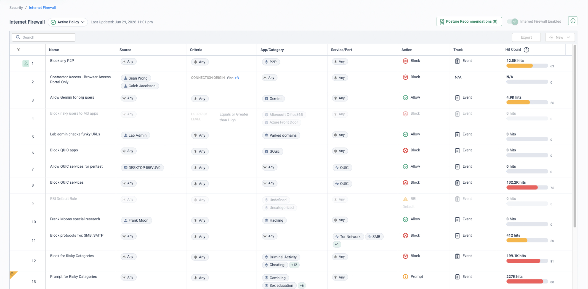
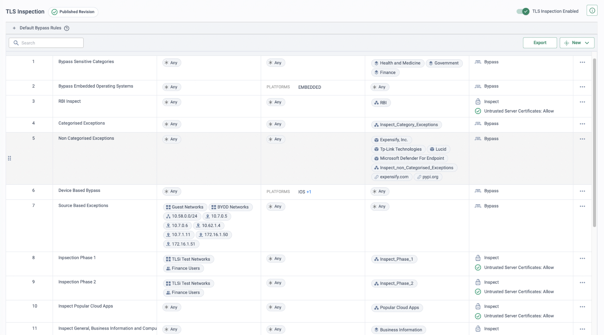
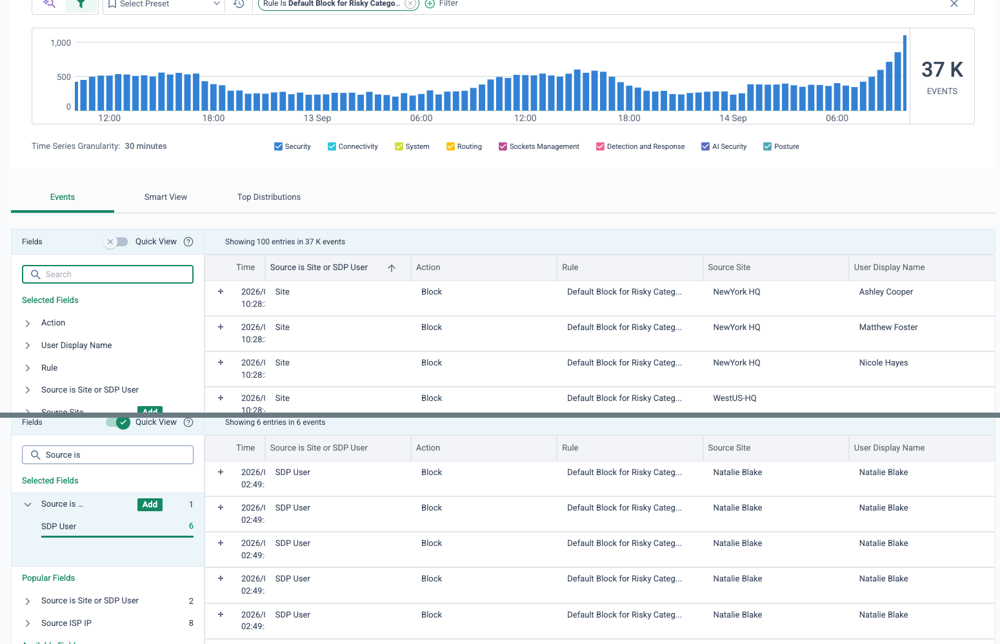

Segment 1 of the 60-minute platform demo — minutes 10 to 15.
Five minutes of console time on internet access control: one global Internet Firewall rulebase
for users and sites, category and application rules that know who the user is, TLS inspection as
the thing that makes those decisions real, and the event that records every verdict. The
prospect leaves knowing that the same three questions — who, where, should they — are asked
of every flow, and that the answer is written down.
Internet policy is one rulebase, written against people and applications, enforced in
the cloud for every site and every user — and every decision it makes is an event you can
read.
In Cato's architecture, policy is a cloud object rather than a device configuration. The
Internet Firewall is defined once in the Cato Management Application and enforced by the
Single Pass Cloud Engine in every PoP, so whichever PoP a site's socket or a user's client
reaches, the identical rule set is already there. Rules are scoped to user groups synced from
the identity provider and to device-posture profiles, not to subnets or appliances — and there
is no per-site, per-appliance or per-region policy anywhere in the product. That is why this
segment opens the console: it is the simplest place to show the single-engine idea the scene
slides promised.
The second idea to land is the dependency. Without TLS inspection, URL filtering falls back to
domain-level decisions; full-path categorisation, file-type control and content-aware verdicts
need the decrypted stream. Cato's guidance is to stage inspection — pilot user groups or test
sites before full deployment, bypassing only what genuinely cannot be inspected — so the
message is not "turn it on" but "here is how we reach high coverage without an outage story".
Everything the later segments show (CASB actions, DLP, GenAI governance) reaches full fidelity
only on decrypted traffic, which is why the prerequisite is introduced here, in segment one.
The five-minute story
Say it in three beats
Bridge in — from the scene slides
“Every decision the platform makes starts with the same three questions: who is this user,
where are they going, and should they? Let's start with the internet.”
Beat 1 — one global policy for users and sites
Say: this is the whole estate's internet policy, and there is no box
behind it. The same ordered rulebase applies to a user at their desk behind the Bristol
Office socket, the same user on the Cato Client at home, and a colleague in Madrid.
Show: the Internet Firewall rulebase — a category rule (for example a
block on risky categories with a live hit count) beside a rule whose source is a named user
or group rather than an IP range. Point at the Source column: people and groups from the
directory, not subnets.
Beat 2 — TLS inspection makes the decision real
Say: category and application verdicts only reach full fidelity on
decrypted traffic, so inspection is the prerequisite for everything that follows. It is
staged: bypass the sensitive categories and the things that cannot be inspected, then
inspect wave by wave.
Show: the TLS Inspection policy — bypass rules at the top, phased
inspect rules scoped to a pilot group beneath them, two actions only: Inspect and Bypass.
Beat 3 — the event that records the decision
Say: every rule match is an event carrying the user, the application or
category, the rule and the action — the audit trail the appliance estate never produced in
one place.
Show: Monitor → Events filtered to the category rule from beat 1: site-
and client-sourced rows, each with a named user, the same rule name and the same verdict.
Bridge out — to Threat Prevention
“That was policy you wrote. Now the threats you did not see coming — same engine, same
flow, no extra appliance.”
What the engine does
Who, where, should they — in one pass
A remote user on the Cato Client and a user behind a branch socket both reach their nearest
PoP. The single-pass engine decrypts what the TLS Inspection policy tells it to, identifies
the user and the application or category, matches the Internet Firewall top-down, and acts —
Allow, Prompt or Block. Whatever it decides, it writes an event.
Allowed Prompt — user acknowledges Blocked Event written for every verdict
Site and remote user hit the same engine at the nearest PoP. TLS inspection (staged by category) feeds the Internet Firewall's user- and category-aware match; the verdict goes to the destination and the record goes to Events.
🌍
One rulebase, every PoP
The Internet Firewall is defined once in the CMA and enforced by the single-pass engine in every PoP — nothing deployed, synced or patched at the edge, and geography stops being a policy boundary.
🪪
Rules target people, not addresses
Sources are user groups synced from the IdP and device-posture profiles. When the directory moves someone between departments, the directory change alone changes their access.
🔍
Inspection as a policy decision
TLS inspection runs at scale in the PoP — enabling it is a rule, not a hardware upgrade. The policy is inspect by default, bypass by exception, staged by cohort and category.
🧾
Every verdict is attributed
Events carry the user name, the matched rule, the action and the destination — for a site-sourced flow as much as for a remote client, so one filter answers who reached what, when, under which rule.
Demo runbook
Five minutes on the console
Three screens, in this order, then the bridge out. Stay on the rulebase screens rather than opening rule editors —
the point is the shape of the policy, not the dialog. Times are cumulative within the segment.
The global rulebase — one category rule, one user rule 0:00 – 2:00
Security → Internet Firewall
Say: “This is the internet policy for every site and every remote user —
ordered, first match wins, and there is no second copy anywhere. Rules are written against
people and categories, not subnets.”
Show: scroll the rulebase slowly. Stop on a category block with a large
hit count, then on a rule scoped to a named user or group — and on a Prompt rule if one is
present, because it is the action a firewall-only audience has never had — and the one a
proxy audience knows as Caution. Point at the Hit Count
column: these are live decisions, not a design document.

The screen to stay on (demo tenant, fictional identities): a category block on risky categories with its hit count, a Prompt rule beneath it, user-scoped rules with named people as Source, and the QUIC block pair that TLS inspection created. Everything the segment needs is visible without opening a rule.
The prerequisite — TLS inspection, staged 2:00 – 3:00
Security → TLS Inspection
Say: “Those category and application verdicts are only as good as what
the engine can see. Inspection is a policy decision here, not a sizing exercise — and it is
staged: bypass what cannot be inspected, pilot a group, then expand category by category.”
Show: the ordered policy with its two actions, Inspect and Bypass. Point
at the sensitive-category and platform bypasses at the top, then at the phased inspect rules
scoped to a pilot group. Mention, without clicking, that the implicit final rule inspects
everything unmatched.

Staging in one screen (demo tenant): bypasses first, then “Inspection Phase 1” and “Phase 2” scoped to a test network and one user group, then the broad inspect rules. This is the shape to describe — a rollout plan expressed as rule order.
The proof — events filtered to the rule 3:00 – 4:30
Monitor → Events
Say: “Every match you just saw counted is a record: who, what
application or category, which rule, what happened. Same rule name, same verdict, whether
the person was in the office or at home.”
Show: filter Events to the tenant's risky-category block rule from step 1,
whatever it is named in your tenant. Read one row aloud
— user name, category, rule, action — then point at the Source column: a site-sourced row
and an SDP-user row for the same rule. If a remote user is in the list, that is the
“configured once, applied everywhere” moment in one screen.

One filter, one rule name, both origins (demo tenant, fictional identities): site-sourced blocks with named users above, the same rule blocking a remote Client user below. Rule, verdict and identity attribution identical on each path.
Transition (4:30 – 5:00). Leave Events open — the next segment returns to it.
Close with the bridge line, verbatim: “That was policy you wrote. Now the threats you did not
see coming — same engine, same flow, no extra appliance.” Then move to
Segment 2 — Threat Prevention.
If running late
This segment is not on the cut list — the running order shortens CASB, DLP and DEM first.
If you are already behind at minute 10, skip the TLS Inspection screen and say the staging
sentence over the rulebase instead; never skip the Events proof.
If they ask
Four questions this segment provokes
“What happens to traffic no rule matches?”
The Internet Firewall matches top-down and ends in an implicit any-any allow, so unmatched traffic passes. That is why block rules sit above any broader allows, and why a new rule is run as Allow with event tracking first so a week of events shows who it would affect before the action is flipped.
No. The documented pilot pattern is a bypass rule with Source = Any and, above it, an inspect rule naming only the pilot users, scoped to high-confidence sets, with the downstream engines tracking rather than blocking so breakage surfaces as events. Certificate-pinned apps and client-certificate sites get a narrow, owned bypass rule; Android, Linux and unidentified operating systems are bypassed by default rules you cannot edit.
“Our proxy has a Caution page — is there an equivalent?”
Yes: Internet Firewall actions are Allow, Prompt and Block, and a proxy's Caution maps to Prompt. The user experience differs, so demonstrate it to the security team before it becomes an acceptance criterion — and expect a policy review to retire a good share of the old Caution rules.
“Why does inspection matter if we only want URL filtering?”
Without the decrypted stream, URL filtering falls back to domain-level decisions; full-path categorisation, file-type control and content-aware verdicts need inspection. In an appliance estate turning it on can push a correctly sized box off a performance cliff, so it quietly stays off — in the PoP it is a policy decision.